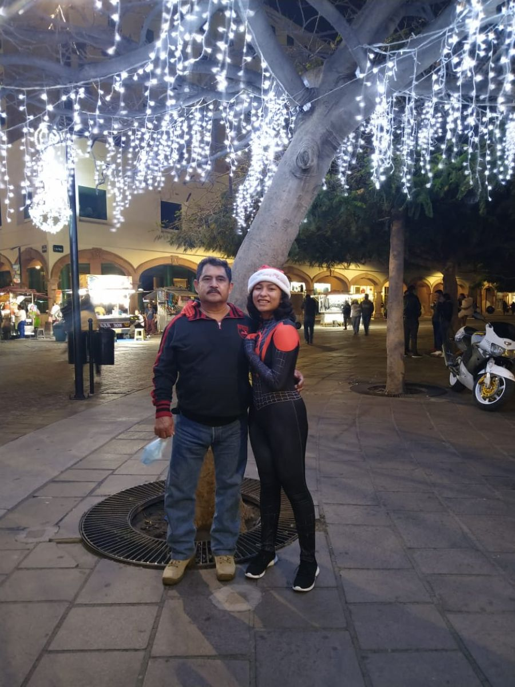

Más que celebrar un día, hoy quiero reconocer a la figura que ha estado presente con nosotros en un mundo donde la paternidad no siempre es presente o continua. En cada etapa de nuestras vidas ahí has estado: cerca, detrás o a la distancia, pendiente y atento día con día de que no falte nada en el hogar. Gracias por tu entrega, apoyo y por tu cariño que, si bien es difícil, ahí está para todos tus hijos; los que están cerca y los que están lejos, que incluso en la lejanía ahí están. Vendrán muchos años más llenos de salud, buenos momentos, viajes al mar y prosperidad.
Soy tu viva imagen hecha mujer que, aunque soy un dolor de cabeza, me has preparado para la vida, para depender solo de mí y hacer con mi vida lo que me plazca, sin ataduras o restricciones, dentro de buenas creencias, valores y conciencia, para volar libre, cumplir mis metas y objetivos, para que el día de mañana no te preocupes por mí.
Aún falta un largo camino por recorrer: viajes a la playa, las tardes de convivencia, comidas juntos y logros que espero me veas cumplir, orgulloso de la persona que, aunque caprichosa y de mal carácter, te quiere mucho.
💙

Siempre has estado ahí para apoyarnos en cada paso.
Espero que este pequeño detalle te recuerde lo importante que eres para mí.